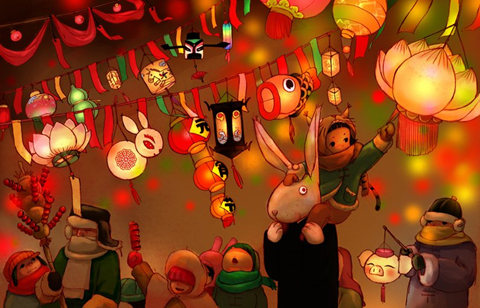
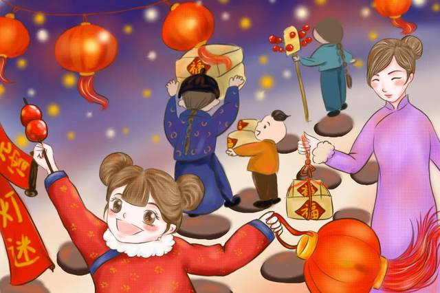

The Chinese New Year holiday comes to its climax with the Yuan Xiao (元宵节—yuán xiāo jié), or Lantern Festival. Began over 2000 years ago, the festival has developed many meanings. It celebrates family reunions and society. It features ancient spiritual traditions. Some also call this the “true” Chinese Valentine’s Day. The many activities include moon gazing, lighting lanterns, riddles, lion dances and eating rice balls. According to the lunar calendar, the festival takes place on January 15. The Spring Festival is a time reserved for families. There is the reunion dinner on New Year’s Eve, visits (拜年—bài nián) to in-laws on the 2nd day and neighbors after that. Stores reopen on the 5th and society basically goes back to normal. But on the 15th, everyone—regardless of age or gender—go out onto the streets to celebrate. Though the Lantern Festival symbolizes reunions (more on that later), it’s also a time of socializing and freedom. In Ancient China, women usually weren’t allowed out the house. But on this night, they can stroll freely, lighting lanterns, playing games and interacting with men. The wild and romantic stories are why some say the Lantern Festival is the true Chinese Valentine’s Day, rather than Qixi (七夕). On a more serious side, the Lantern Festival also has religious aspects. It was important in ancient Chinese paganism, and also modern day Buddhism and ethnic minority cultures.
How Do Chinese Celebrate the Lantern Festival
Lighting and Watching Lantern
Lantern Festival is the main activity.When the festival comes, lanterns come in all shapes and sizes (traditional globes, fish, dragons, goats!Homes, shopping malls, parks and streets can be seen everywhere, attracting countless viewers.Children may carry small lanterns as they walk down the street.Lantern art works vividly display traditional Chinese images and symbols, such as fruits, flowers, birds, animals, people, buildings and so on.In China the word lamp (lamp d ng) is obviously similar to (d ng), which means "a boy with a newborn baby".Therefore, lighting a lamp there means to illuminate the future and procreate.Lighting the lanterns is a way for people to pray for the future and express good wishes to their families.Women who want to get pregnant walk under a lantern and pray for a baby.
Guessing Lantern Riddles
Lantern owners write riddles on a piece of paper and then post the riddles on the colorful lanterns.People crowded around to guess the lantern riddles.Guessing lantern riddles started in the song dynasty (960-1279) and is one of the most important and popular activities of the Lantern Festival.If someone thinks they have the right answer, they can solve the riddle and then go to the lantern owner to check their answer.If the answer is correct, there is usually a small gift as a reward.Guessing lantern riddles is popular among all social classes because it is fun and informative
Lion Dances
Lion dance is one of the best traditional folk dances in China.It dates back to The Three Kingdoms period (220-280).The ancient people regarded the lion as a symbol of courage and strength, believing it could ward off evil spirits and protect people and livestock.Therefore, lion dancing is an important festival, especially the Lantern Festival, to ward off evil spirits, pray for good luck and safety.A lion dance requires two trained performers to wear lion costumes.One is the head and front legs, and the other is the back and back legs.Under the direction of the choreographer, the lion dances to the rhythm of drums, gongs and cymbals.Sometimes they jump, roll and do difficult movements like stilts.In a lion dance, the "lion" moves from place to place, looking for some green vegetables, which contain red envelopes of money.The performance was very interesting and the audience enjoyed it.Today, lion dancing has spread to many overseas Chinese countries, and is popular in countries such as Malaysia and Singapore.In many Chinese communities in Europe and the United States, the Chinese dance lion or dragon during the Spring Festival and other important festivals.